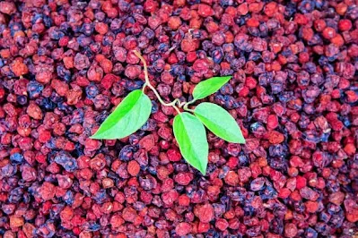

Élixirs naturels · 5 min de lecture
Élixir aux Baies de Schisandra : le rituel adaptogène complet pour l’énergie, le foie et la clarté mentale

Introduction
Peu de plantes peuvent se vanter d’agir sur autant de plans à la fois.
Les baies de schisandra, joyau de la pharmacopée asiatique, sont surnommées les baies aux cinq saveurs (acide, sucré, salé, amer et piquant). Cette particularité n’est pas symbolique : elle reflète une action globale sur l’organisme.
Dans un quotidien où le stress, la fatigue mentale, la surcharge hépatique et la dispersion énergétique sont fréquents, la schisandra se distingue comme une plante de coordination et d’harmonisation.
Dans cet article, je te présente un élixir naturel à base de baies de schisandra, formulé avec une synergie d’ingrédients choisis pour créer une alchimie optimale pour la santé, l’énergie durable, la clarté mentale et la protection cellulaire.
👉 Je tiens à vous rappeler une règle d’or que j’aime beaucoup et qui guide mes choix au quotidien : si la nature ne l’a pas créé, ne le buvez pas.
Le problème
Beaucoup de personnes vivent aujourd’hui avec :
une fatigue nerveuse persistante,
un stress chronique difficile à évacuer,
une baisse de concentration et de motivation,
un foie surchargé (alimentation, pollution, médicaments),
une énergie instable, parfois trop haute, parfois trop basse.
Le corps n’est pas cassé.
Il est désynchronisé.
Ce qu’il réclame, ce n’est pas plus de stimulation, mais une plante capable d’harmoniser, réguler et protéger.
La promesse
L’élixir aux baies de schisandra agit comme un chef d’orchestre adaptogène.
Il soutient l’énergie vitale, protège le foie, améliore la clarté mentale et renforce la résistance au stress, tout en favorisant une sensation d’équilibre global.
Ce n’est pas un excitant.
C’est un régulateur intelligent du terrain.
Les bénéfices
Une énergie plus stable et mieux répartie
Une meilleure résistance au stress
Un soutien profond du foie et de la détoxification
Une clarté mentale accrue
Une protection cellulaire renforcée
🌿 Pourquoi ce remède est efficace
La schisandra est classée parmi les plantes adaptogènes majeures.
Elle agit simultanément sur :
le système nerveux,
le foie,
l’énergie cellulaire,
la gestion du stress oxydatif.
Elle est naturellement riche en :
lignanes (puissants antioxydants et protecteurs hépatiques),
composés adaptogènes régulateurs,
substances soutenant l’endurance mentale et physique.
Associée à des ingrédients comme l’hibiscus, le miel brut et le citron vert, la schisandra devient plus accessible au goût, mieux assimilée et encore plus efficace sur le plan systémique.
👉 Elle ne pousse pas l’énergie : elle la canalise.
💪 Les bienfaits de l’élixir aux baies de schisandra
Soutien du foie et de la détoxification
Protège les cellules hépatiques et soutient l’élimination.Amélioration de la résistance au stress
Aide le corps à mieux s’adapter aux pressions physiques et mentales.Clarté mentale et concentration
Favorise un esprit plus stable, plus présent.Protection antioxydante
Lutte contre le stress oxydatif et le vieillissement cellulaire.Énergie durable et coordonnée
Idéale en période de surcharge ou de transition.
🍷 La recette de l’Élixir Harmonie & Clarté à la Schisandra
Ingrédients (alchimie optimale)
1 cuillère à café de baies de schisandra séchées (ou ½ c. à café en poudre)
300 ml d’eau chaude (non bouillante)
1 cuillère à café de fleurs d’hibiscus séchées
1 cuillère à café de miel brut (optionnel)
Un filet de jus de citron vert
Une pincée de zeste de citron (optionnelle)
Pourquoi cette synergie fonctionne ?
La schisandra régule, protège et harmonise.
L’hibiscus soutient la circulation et le foie.
Le citron vert stimule l’assimilation et la fraîcheur mentale.
Le miel adoucit et stabilise l’énergie.
Le zeste renforce l’action antioxydante.
Préparation
Fais infuser la schisandra et l’hibiscus dans l’eau chaude pendant 10 à 15 minutes.
Filtre.
Ajoute le miel, le citron vert et le zeste.
Bois tiède, lentement.
⏰ Comment l’utiliser
À consommer 1 fois par jour, idéalement :
le matin pour la clarté mentale,
ou en début d’après-midi.
Peut être utilisé en cure de 3 à 5 semaines, avec pause.
Convient particulièrement en période de stress, de surcharge ou de fatigue mentale.
👥 À qui s’adresse ce rituel
Aux personnes stressées ou surmenées
À ceux qui veulent soutenir leur foie naturellement
Aux personnes cherchant une énergie stable et claire
Aux actifs, entrepreneurs, créatifs, sportifs
À toute personne souhaitant renforcer sa résilience globale
⚠️ Précautions
Respecte les dosages : la schisandra est puissante.
Déconseillée en cas de grossesse sans avis médical.
En cas de traitement hépatique ou médical, demande conseil à un professionnel de santé.
Choisis des baies pures, bio et bien identifiées.
🌱 Conclusion & appel à l’action
L’élixir aux baies de schisandra est une plante de cohérence.
Elle rappelle que la vraie performance ne vient pas de la tension, mais de l’harmonie interne.
C’est un rituel profond, intelligent et protecteur, pour celles et ceux qui veulent avancer avec énergie, clarté et stabilité.
👉 Si la nature ne l’a pas créé, ne le buvez pas.
Je partage régulièrement des élixirs, rituels et ressources bien-être pour t’aider à renforcer ton énergie, ton équilibre interne et ta longévité, naturellement.
📚 Je suis auteur bien-être sous le pseudo Chest0 JM.S., mes ouvrages sont disponibles sur Amazon.
🔗 Retrouve tout mon univers ici :
👉 https://chest0.fr
👉 Si tu veux aller plus loin, découvre aussi notre
« Travail assis : pauses actives »
👉 Créez votre planning de pauses gratuit : chest0.fr/outils/pauses-actives/
« Journal du sommeil »
👉 Tenez votre journal du sommeil sur 7 jours, gratuitement : chest0.fr/outils/journal-sommeil/
« Les 20 aliments des centenaires » et « Microbiote intestinal »
👉 Mes livres de recettes naturelles, élixirs et détox : chest0.fr/pages/livres.html
« 4 habitudes à observer au quotidien »
👉 Faites le point sur vos habitudes avec l'outil gratuit : chest0.fr/outils/equilibre-quotidien/
Plus de 40 recettes d'élixirs dans les livres Chest0.
Voir les livres